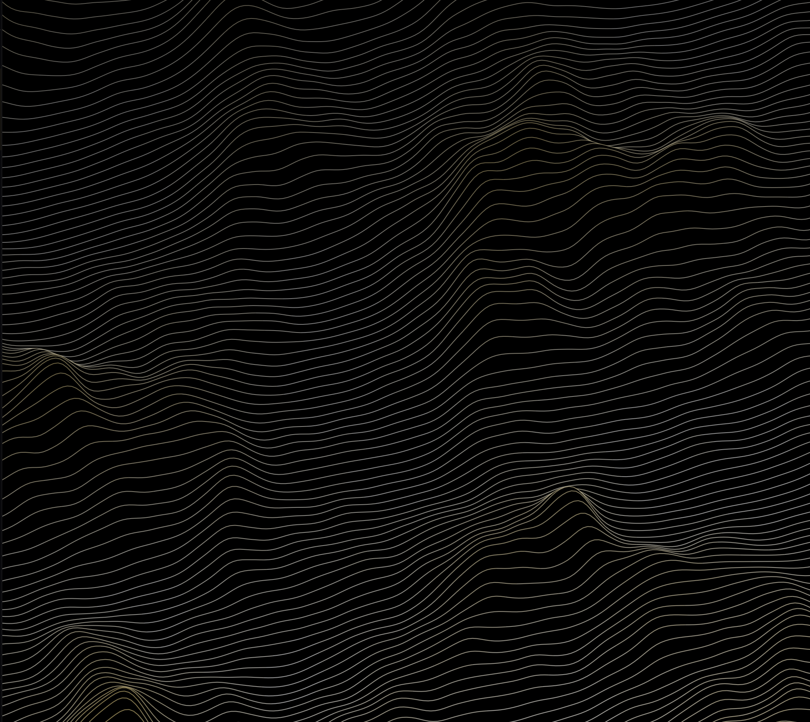
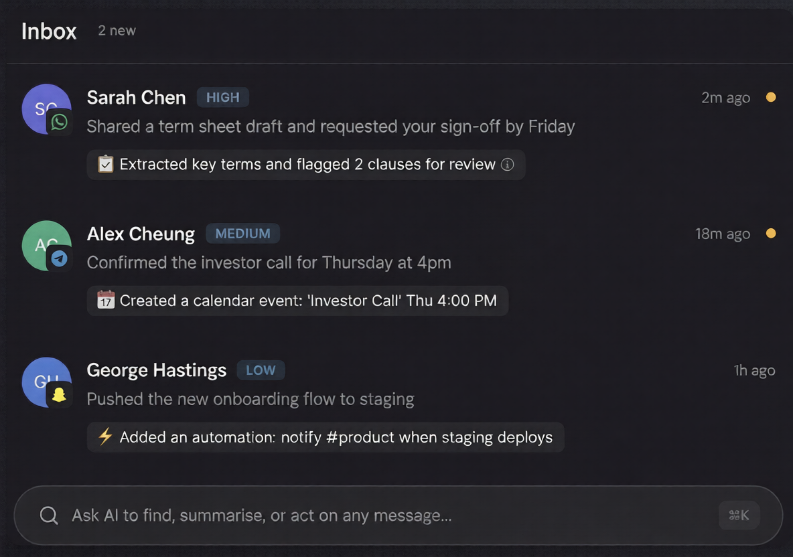

See the network. Literally.
Stop looking at endless lists. The Spatial Engine maps your entire social network as an interactive topography. Uncharted space remains flat, while dense, high-resonance social clusters rise into peaks as the AI simulates your interactions autonomously.

Explore your full possibility space.
Your virtual profile runs continuously in the background, simulating social interactions with people across the network at a scale no human could reach.
Running computational interactions to surface outcomes.
Find anyone. Describe them in plain language.
Tell your AI who you're looking for, by industry, background, interest, or vibe. It searches, ranks, and surfaces the exact right people.
Learn more ›Your AI handles the admin. You just show up.
Connection requests, follow-ups, screening conversations, all handled by your AI. Your inbox shows only what needs your attention.
Learn more ›Your messaging, unified and supercharged.
Connect your world. WhatsApp, Snapchat, Telegram, and Discord—all in one ranked stream. No more ghosting, no more lost threads. Your in-chat AI agent handles scheduling and retrieval while building your virtual profile from every interaction.

A profile that evolves with you.
Your graph is never static. As you engage with people outside your assigned industry, your cloud reshapes. The algorithm learns what resonance looks like, specifically for you.
Millions of conversations before you say hello.
Your digital twin operates at a computational scale. It continuously tests hypotheses against other users' agents across the network, running thousands of conversational simulations to gauge ideological resonance, predict collaboration synergies, and surface the most valuable connections automatically.